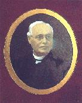

|
|
 | The Family History of Cardinal Paul Cullen (1803-1878) from the "Reportorium Novum" by Peadar Mac Suibhne, FTM World Family Tree, Family histories, and other sources |
 Patrick Moran 1'st Bishop of Dunedin |
St. Joseph's Cathedral Dunedin, New Zealand 
|  Michael Verdon 2'nd Bishop of Dunedin |
Many thanks for the above photos to Marc Peyroux, who maintains a website devoted to St. Joseph's Cathedral in New Zealand. These are just two of many photographs from Marc's site. St Joseph's Cathedral is the Mother church and the Parish Church and is home for the Bishops of the Diocese of Dunedin in New Zealand. Please visit Marc's Homepage for more information on notable personalities and events concerning St. Joseph's. | ||